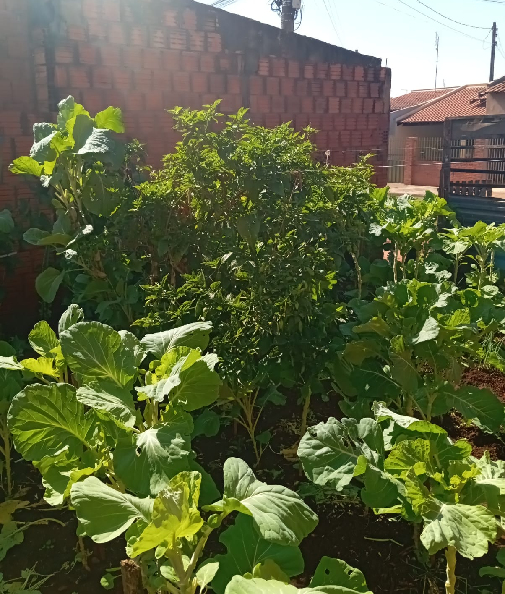
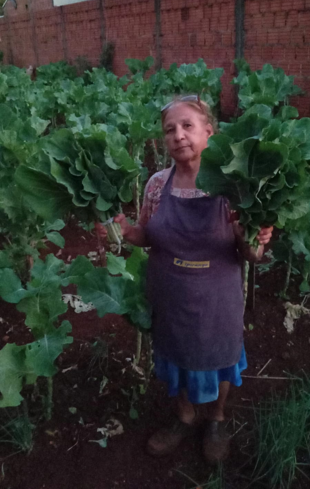
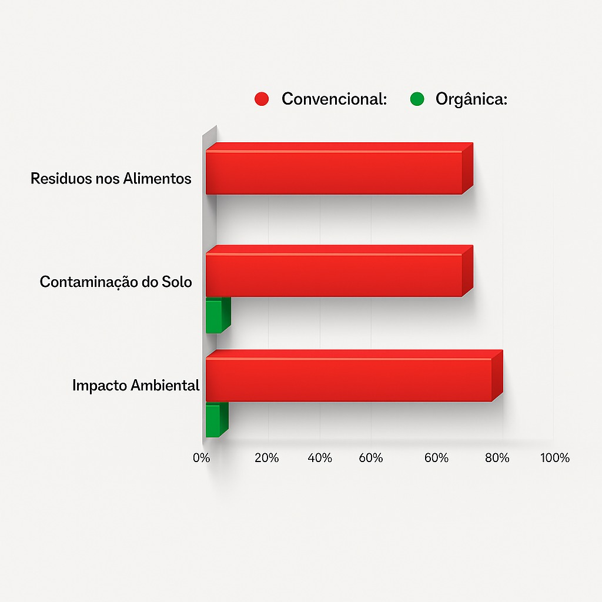

A Horta que muda vidas
Cultivo
Produtos em Promoção


A Horta que muda vidas
Em nossa horta, cada semente é plantada com propósito e respeito à natureza. Acreditamos que a verdadeira nutrição vem da terra, e por isso cultivamos alimentos totalmente livres de agrotóxicos e produtos químicos. Aqui, priorizamos o cuidado com o solo, a pureza da água e o equilíbrio do ecossistema, garantindo colheitas mais saudáveis e saborosas.
Nossas hortaliças, frutas e ervas são colhidas no ponto certo, preservando o frescor e o valor nutricional que fazem toda a diferença no dia a dia. Trabalhamos com práticas sustentáveis, reduzindo o desperdício e promovendo o consumo consciente. Cada produto que chega até você carrega o carinho de quem cultiva com as próprias mãos e o compromisso com um futuro mais verde e saudável.
Venha conhecer nossa horta e sentir de perto o aroma, o sabor e a energia de alimentos verdadeiramente naturais. Descubra como o simples ato de plantar pode transformar vidas, unir famílias e inspirar um novo jeito de se relacionar com a comida e com o planeta.

Sobre vovó Tereza
A história da horta nasceu das mãos e da coragem de Vovó Tereza. Aos 15 anos, ela começou a plantar por necessidade econômica a terra era a única forma de garantir o sustento da família. Com poucas sementes, muita força de vontade e o coração cheio de esperança, Tereza transformou um simples pedaço de chão em um verdadeiro lar de vida
Com o passar do tempo, o que antes era uma obrigação se tornou paixão. Cuidar da horta deixou de ser apenas um meio de sobrevivência e passou a ser um gesto de amor. Cada planta, cada broto e cada colheita criavam uma conexão profunda entre ela e a natureza. O trabalho duro virou terapia, e o solo, um companheiro fiel de todas as manhãs.
Hoje, a horta de Vovó Tereza é muito mais do que uma fonte de alimentos frescos — é o reflexo de uma vida dedicada ao cuidado, à simplicidade e à gratidão. Um exemplo de que, mesmo nas dificuldades, é possível florescer e cultivar algo bonito, verdadeiro e cheio de propósito.

Produção limpa e consciente
Enquanto a agricultura convencional depende fortemente de agrotóxicos e produtos químicos para manter a produtividade, nossa horta segue o caminho da natureza. Trabalhamos com adubação orgânica, rotação de culturas e controle biológico de pragas, métodos sustentáveis que respeitam o equilíbrio do solo e preservam a vida ao redor.
Essas práticas reduzem o impacto ambiental, protegem os recursos naturais e garantem alimentos verdadeiramente puros, sem resíduos químicos. O resultado é uma produção mais saudável, saborosa e segura para quem consome, além de contribuir para um planeta mais limpo e equilibrado.
A tabela abaixo mostra de forma clara essa diferença: enquanto a agricultura convencional prioriza o rendimento imediato, a horta orgânica cultiva qualidade, saúde e sustentabilidade em cada colheita.

Calendário de Plantio e Colheita — Horta da Vovó
Sugestão de plantio mês a mês e tempo médio para colher — adaptado para clima brasileiro.
| Mês | O que plantar | Tempo médio para colher |
|---|---|---|
| Janeiro | Alface, rúcula, cebolinha, pepino, pimentão | 30 a 60 dias |
| Fevereiro | Tomate, couve, cenoura, coentro, beterraba | 60 a 90 dias |
| Março | Espinafre, rabanete, alface, salsa, acelga | 30 a 60 dias |
| Abril | Couve, cenoura, almeirão, cebolinha | 60 a 90 dias |
| Maio | Brócolis, couve-flor, beterraba, alface roxa | 60 a 100 dias |
| Junho | Salsinha, repolho, rúcula, espinafre | 45 a 80 dias |
| Julho | Cenoura, beterraba, couve, alho-poró | 60 a 90 dias |
| Agosto | Tomate-cereja, manjericão, pimentão, pepino | 60 a 100 dias |
| Setembro | Abóbora, alface, rúcula, milho-verde | 30 a 90 dias |
| Outubro | Feijão-vagem, cebolinha, berinjela, tomate | 45 a 100 dias |
| Novembro | Abobrinha, pepino, pimentão, coentro | 40 a 90 dias |
| Dezembro | Alface, manjericão, rúcula, cenoura | 30 a 60 dias |
Perguntas Frequentes
Sim! Todos os nossos produtos são cultivados sem o uso de agrotóxicos ou fertilizantes químicos. Utilizamos apenas métodos naturais e sustentáveis de cultivo, garantindo alimentos 100% saudáveis para você e sua família.
Você pode fazer pedidos diretamente na nossa horta ou através do nosso WhatsApp. Estamos localizados na R. Henrique José Píres, 299 - Cândido Mota, SP. Entre em contato conosco para conhecer nossa disponibilidade atual de produtos.
Sim, fazemos entregas na região de Cândido Mota e arredores. Entre em contato conosco para verificar se atendemos sua localidade e conhecer as condições de entrega.
Cultivamos uma grande variedade de hortaliças frescas, frutas da estação e ervas aromáticas. Nossa produção varia de acordo com a época do ano, sempre priorizando produtos frescos e de qualidade. Entre em contato para saber o que está disponível no momento.
Com certeza! Adoramos receber visitantes e mostrar como cultivamos nossos produtos com tanto carinho. Entre em contato conosco para agendar sua visita e conhecer de perto a Horta da Vovó.
Estamos abertos de segunda a sábado. Entre em contato conosco para confirmar nossos horários e garantir que teremos os produtos frescos que você procura.

Encontre-nos aqui!

Tereza Aparecida De Oliveira
Fundadora da Horta da Vovó